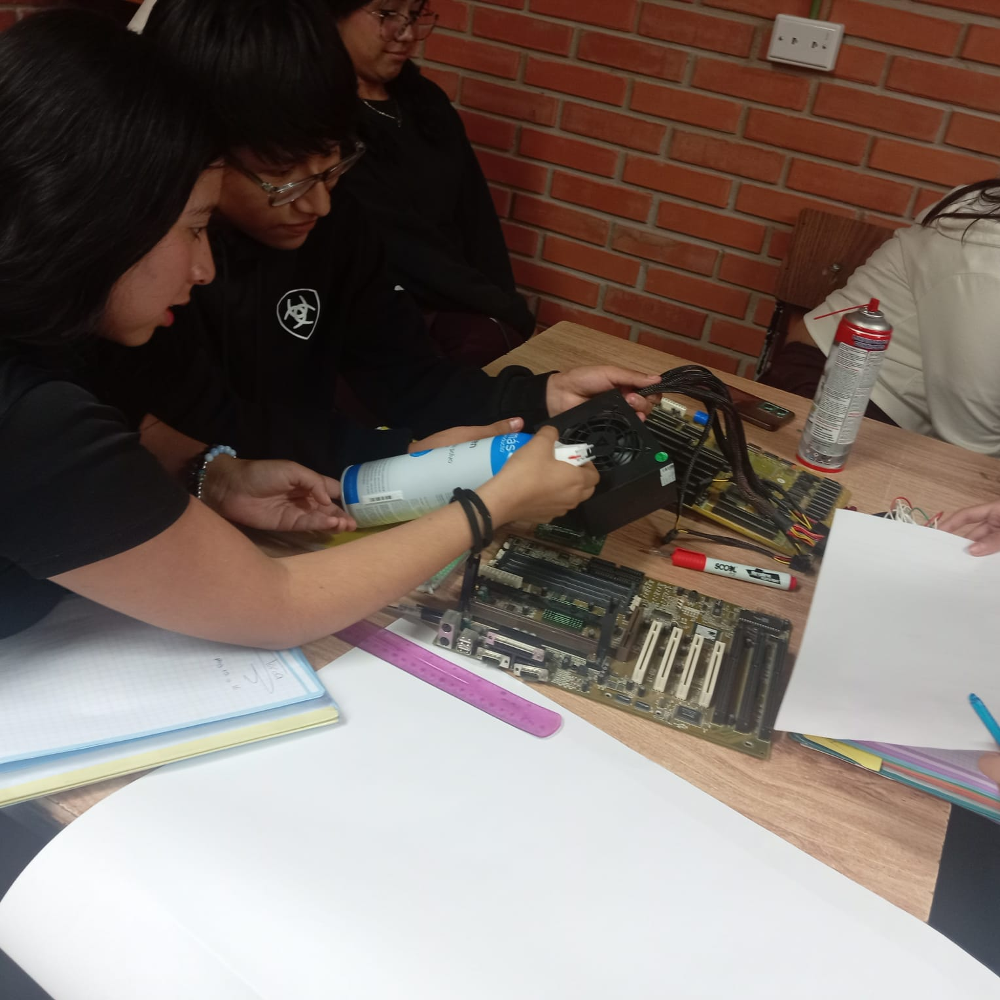
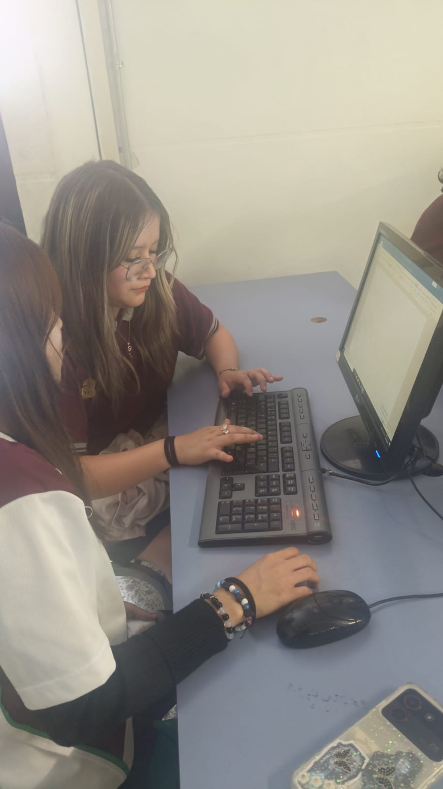

Limpieza física y optimización del sistema para evitar fallas futuras y mantener un mejor rendimiento.
Más Información
Diagnóstico y reparación de problemas de hardware y software para restaurar el funcionamiento del equipo.
Más Información
Instalación y configuración de programas esenciales para trabajo, estudio y entretenimiento.
Más Información